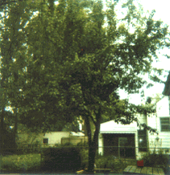
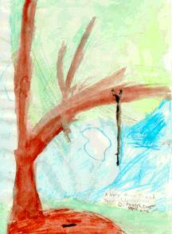

Student Project
Jessica


The tree I picked is a pear tree. It has given a lot of pears! When I stand next to my tree, I feel stronger, neater, happier, and somewhat sillier. My tree is 39 inches at the base, then branches off into three other branches measuring 24, 23 and 16 inches. Those branches then break off into smaller, smaller, and smaller branches. My tree has steps naturally sticking out, like it was made for someone to climb it!
I chose this tree because I find it interesting, noteworthy and full of surprises. My tree is 23 years old.
-Jessica
c. Jessica
Grade 4
Thomas Jefferson Magnet School
Euclid, Ohio USA
"A Very Good Friend"
Pencil, Watercolor, Oil Pastel and Crayon 9"X12"
Pear
Latin Name: TBA
Age: 23 years old
Circumference at 54 inches from the base: 39 inches
Location: Euclid, Ohio USA
 Return to Main Page
Return to Main Page
June Julian jj68@nyu.edu